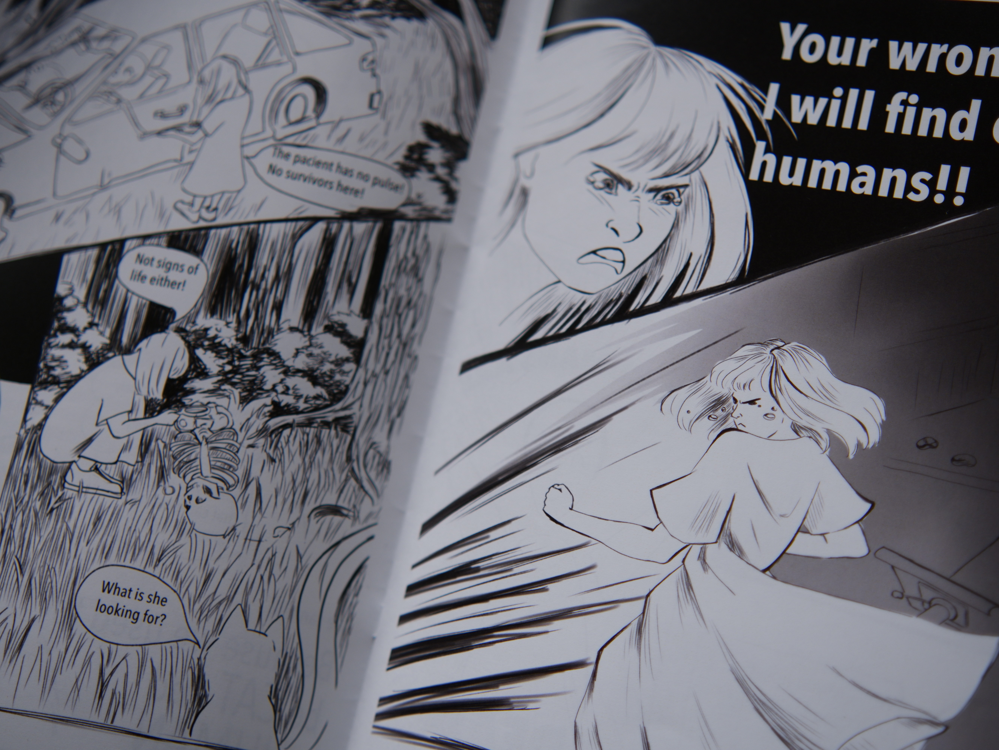
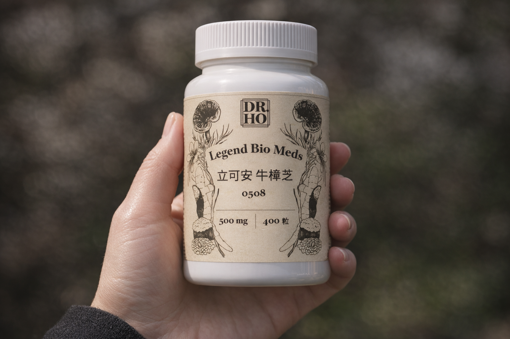
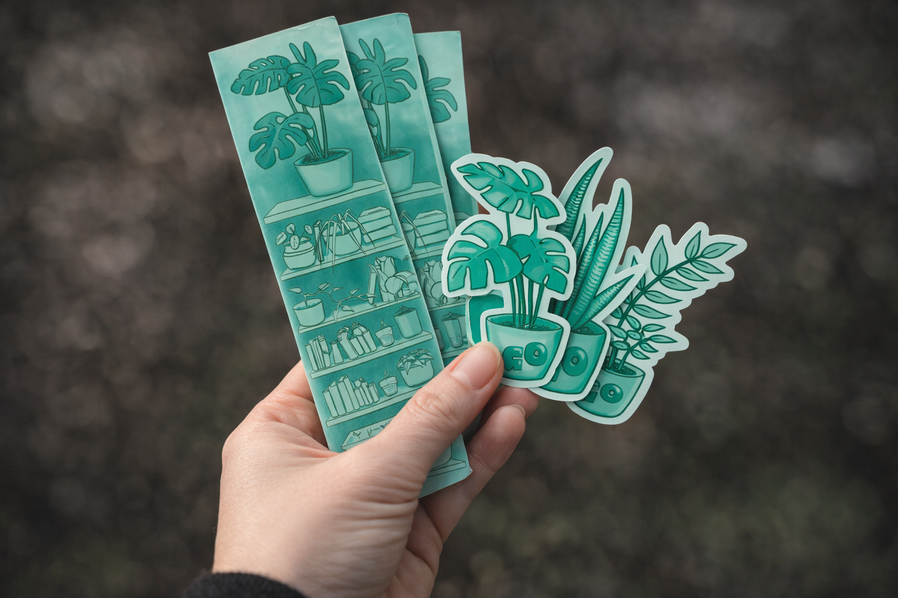

Selected Pages | 01 | 2025
Lyra — Manga Project
A dystopian story following the last surviving human and two opposing AI systems.
Communication Design + Illustration
I create concept-driven visuals across illustration, design, and narrative formats — combining structure, image-making, and atmosphere.
I am Lena Gerken, a communication designer working between illustration, editorial design, and visual storytelling. I am interested in how images, typography, and atmosphere shape the way a story is experienced.
Get to know me better



Contact
For projects, collaborations, or inquiries, feel free to reach out.
lena-gerken@hotmail.com